LLM (Large Language Models) Serving quickly became an important workload. The efficacy of operators within Transformers – namely GEMM, Self-Attention, GEMV, and elementwise computations are critical to the overall performance of LLM serving. While optimization efforts have extensively targeted GEMM and GEMV, there is a lack of performance studies focused on Self-Attention in the context of LLM serving. In this blog post, we break Self-Attention down into three stages: prefill, decode, and append; analyze the performance bottleneck of Self-Attention on both single-request and batching scenarios in these three stages; and propose a solution to tackle these challenges. These ideas have been integrated into FlashInfer, an open-source library for accelerating LLM serving released under Apache 2.0 license.
FlashInfer has been developed by researchers from the University of Washington, Carnegie Mellon University, and OctoAI since summer 2023. FlashInfer provides PyTorch APIs for quick prototyping, and a dependency-free, header-only C++ APIs for integration with LLM serving systems. Compared to existing libraries, FlashInfer has several unique advantages:
- Comprehensive Attention Kernels: FlashInfer implements attention kernels that cover all the common use cases of LLM serving with state-of-the-art performance, including single-request and batching versions of Prefill, Decode, and Append kernels, on various formats of KV-Cache (Padded Tensor, Ragged Tensor, and Page Table).
- Optimized Shared-Prefix Batch Decoding: FlashInfer enhances shared-prefix batch decoding performance through cascading, resulting in an impressive up to 31x speedup compared to the baseline vLLM PageAttention implementation (for long prompt of 32768 tokens and large batch size of 256), check another blog post for more details.
- Accelerate Attention for Compressed/Quantized KV-Cache Modern LLMs are often deployed with quantized/compressed KV-Cache to reduce memory traffic. FlashInfer accelerates these scenarios by optimizing performance for Grouped-Query Attention, Fused-RoPE Attention and Quantized Attention. Notably, FlashInfer achieves up to 2-3x speedup for Grouped-Query Attention on A100 & H100, compared to vLLM implementation.
FlashInfer has been adopted by LLM serving systems such as MLC-LLM (for its CUDA backend), Punica and sglang. We welcome wider adoption and contribution from the community. Please join our discussion forum or creating an issue to leave your feedback and suggestions.
Attentions in LLM Serving
There are three generic stages in LLM serving: prefill, decode and append. During the prefill stage, attention computation occurs between the KV-Cache and all queries. In the decode stage, the model generates tokens one at a time, computing attention only between the KV-Cache and a single query. In the append stage, attention is computed between the KV-Cache and queries of the appended tokens. append attention is also useful in speculative decoding: the draft model suggests a sequence of tokens and the larger model decides whether to accept these suggestions. During the attention stage, proposed tokens are added to the KV-Cache, and the large model calculates attention between the KV-Cache and the proposed tokens.
The crucial factor affecting the efficiency of attention computation is the length of the query (), determining whether the operation is compute-bound or IO-bound. The operational intensity (number of operations per byte of memory traffic) for attention computation is expressed as , where represents the length of the KV-Cache. During the decode stage, where is consistently 1, the operational intensity is close to , making the operator entirely IO-bound. In the append/prefill stages, the attention operational intensity is approximately , leading to compute-bound scenarios when is substantial.
The diagram illustrates the attention computation process in the prefill, append, and decode stages:
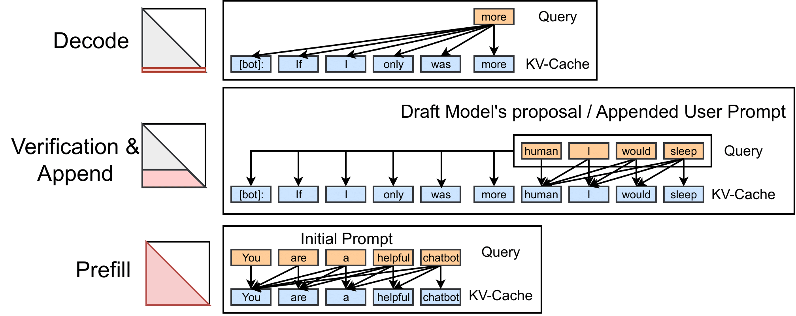
Figure 1: Decode attention fills one row of the attention map at a time, prefill attention fills the entire attention map (under the causal mask), and the append attention fills the trapezoid region.
The figure below shows the roofline model of the three stages of attention computations. Decode attention performance is always underneath the peak bandwidth ceiling (bounded by peak memory bandwidth in GPU), and thus is IO-bound. Prefill attention has high operational intensity and is under the peak compute performance ceiling (bounded by peak floating point performance). Append attention is IO-bound when the query length is small, and compute-bound when the query length is large.
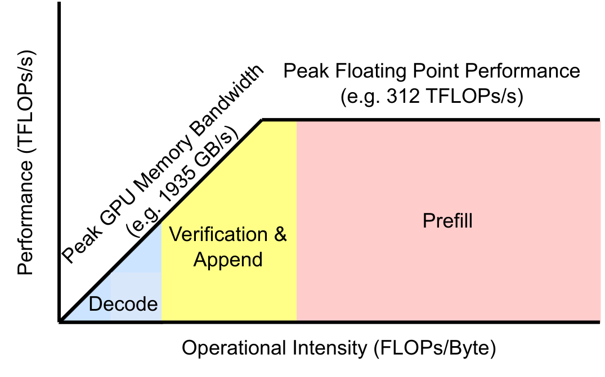
Figure 2. Roofline model of attention operators in LLM Serving, data from A100 PCIe 80GB.
Single-Request and Batching
There two common ways to serve LLM models: batching and single request. Batching groups several user requests together and process them in parallel to improve the throughput, however, the operational intensity of attention kernels is irrelevant to batch size 1, and batch decoding attention still has operational intensity of .
FlashInfer Overview
FlashAttention proposes to fuse multi-head attention into a single kernel by generalizing online softmax trick to self-attention, thus avoiding the overhead of materializing the attention matrix on GPU global memory. FlashAttention2 further improves performance by adopting a more reasonable tiling strategy and reducing the number of non tensor ops to alleviate the issue that A100/H100 has low non-tensor cores performance. vLLM proposes PageAttention where KV-Cache is organized as a page table, to alleviate the memory fragmentation issue in LLM serving.
FlashInfer implements single-request and batch version of FlashAttention for all three stages: prefill, append and decode on versatile KV-Cache formats (e.g. Ragged Tensor, Page Table). For single decode/prefill and batch decoding kernels, FlashInfer achieves state-of-the-art performance for single-request decode/prefill and batch decode kernels. Moreover, FlashInfer implements prefill/append kernels for Paged KV-Cache which none of the existing libraries have done before, and it be used to serve models in speculative decoding setting.
Many recent work proposes KV-Cache compression techniques to reduce memory traffic. In light of this, FlashInfer optimize kernels for Grouped-Query Attention, Fused-RoPE Attention and Quantized Attention for efficient serving with compressed KV-Cache:
- Grouped Query Attention: Grouped Query Attention uses a smaller number of heads for keys and values thus saving memory traffic. The operational intensity of Grouped Query Attention grows from to where is the number of heads for queries and is the number of heads for keys and values. GPUs such as A100/H100 has low non-tensor cores performance, and thus traditional implementation of Grouped Query Attention is compute-bound. FlashInfer proposes to use prefill kernels (which utilizes Tensor Cores) for decode attention in GQA, and achieves up to 2-3x speedup compared to vLLM implementation.
- Fused-RoPE Attention: RoPE (Rotary Positional Embeddings) has become a standard component of Transformers, most existing serving systems stores post-RoPE keys (the keys after applying rotary embeddings) in KV-Cache. However, some recent work such as StreamingLLM will prune tokens in KV-Cache, and the position of tokens will change after pruning, thus the post-RoPE keys in KV-Cache become meaningless. In this case, FlashInfer proposes to save pre-RoPE keys in KV-Cache, and fuses RoPE into attention kernel. Experiments on various platform and settings show that FlashInfer’s Fused-RoPE Attention kernel can apply RoPE on the fly with negligible overhead.
- Quantized Attention: Another way to compress KV-Cache is through pruning, FlexGen and Atom show that it’s possible to prune KV-Cache to 4-bit with negligible accuracy loss. FlashInfer implements low-precision attention kernels so that we can achieve nearly linear speedup to the compression ratio (~4x for 4bit, ~2x for 8bit).
Some recent work such as LightLLM and sglang uses a special form of PageAttention where page size equals one, for easy management of KV-Cache in complicated serving scenarios such as structured generation. FlashInfer optimizes PageAttention kernels by pre-fetching page indices in GPU shared memory, so that kernel performance is not affected by the page size.
In the subsequent sections, we will delve into the detailed optimizations and benchmark results achieved by FlashInfer.
Benchmark Settings
Hardware
We benchmarked on 4 different GPUs: H100 SXM 80GB, A100 PCIe 80GB, RTX 6000 Ada and RTX 4090, the first two is widely used data center GPU in Hopper and Ampere architectures, respectively, and latter two are workstation and gaming GPUs in Ada Lovelace architecture that are much more affordable, the specifications are listed in the following table:
| H100 SXM 80GB | A100 PCIe 80GB | RTX Ada 6000 | RTX 4090 | |
|---|---|---|---|---|
| GPU Memory (GB) | 80 | 80 | 48 | 24 |
| Micro Architecture | Hopper (sm_90) | Ampere (sm_80) | Ada Lovelace (sm_89) | Ada Lovelace (sm_89) |
| Memory bandwidth (GB/s) | 3,352 | 1,935 | 960 | 1,008 |
| Number of SM | 132 | 108 | 142 | 128 |
| Peak Tensor Cores Performance (TFLops/s) | 989 | 312 | 366 | 165 (f32 accum) 330 (f16 accum) |
| Peak (Non-Tensor Cores) FP32 Performance (TFLops/s) | 67 | 20 | 90 | 80 |
| Max Shared Memory (KB/SM) | 228 | 164 | 100 | 100 |
| L2 Cache (KB) | 51200 | 40960 | 98304 | 73728 |
H100 SXM 80GB uses HBM3 and A100 PCIe 80GB use HBM2e, both have larger memory bandwidth than RTX Ada 6000 and RTX 4090 that use GDDR6X. RTX Ada 6000 and RTX 4090 have much larger non-Tensor Cores peak performance (90 and 80 TFLops/s respectively) than A100 (20 TFLops/s). The later three GPUs have similar peak Tensor Cores (fp16 input, without sparsity) performance for f16 accumulation, RTX 4090’s Tensor Cores have 2x throughput with fp16 accumulation compared to fp32 accumulation, while the other GPUs have the same throughput for fp16 and fp32 accumulation.
Below is the roofline curve of the four GPUs for both Tensor Cores and CUDA Cores:
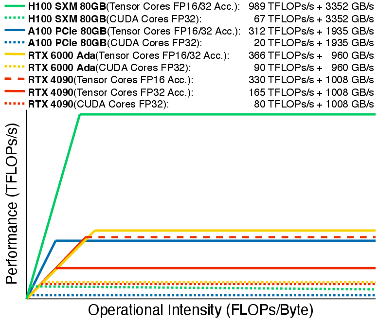
Figure 3: Devices Roofline of 4 GPUs, Tensor Cores Performance and CUDA Cores Performance are indicated separately.
The ridge point is determined by the ratio of peak floating point performance and memory bandwidth.
Software
The baselines being compared are: FlashAttention 2.4.2 which has incorporated FlashAttention 2 and Flash-Decoding, and vLLM v0.2.6 that implements PageAttention 1&2. For vLLM we use prebuilt wheels from pip, we build FlashAttention & FlashInfer from source code with the NVCC compiler in CUDA 12.3.1 release. The kernel profiling is done with nvbench library, we take the “cold” GPU time which flushes the L2 cache before each kernel launch.
Metrics
We report achieved TFLops/s for prefill & append attention kernels, and GPU memory bandwidth utilization (computed by ) for decode & append attention kernels.
Prefill Kernels
For prefill (multi-query) attention, we reimplemented the
FlashAttention 2 algorithm in pure CUDA with some additional
optimizations. Standard FlashAttention implementation uses Tensor Cores
with fp16 input and fp32 accumulator, however, RTX 4090 GPUs has lower
Tensor Cores performance with fp32 accumulator, we observe that the
phase in attention computation have small value range and can be
accumulated with fp16 (because the head dimension is always small: e.g.
128), FlashInfer provides an allow_fp16_qk_reduction
option to allow this optimization (but still use fp32 accumulation for
),
this optimization could bring 50% speedup on RTX 4090. Below is the
performance comparison of FlashInfer 0.0.1 and FlashAttention 2.4.2 on
different GPUs:
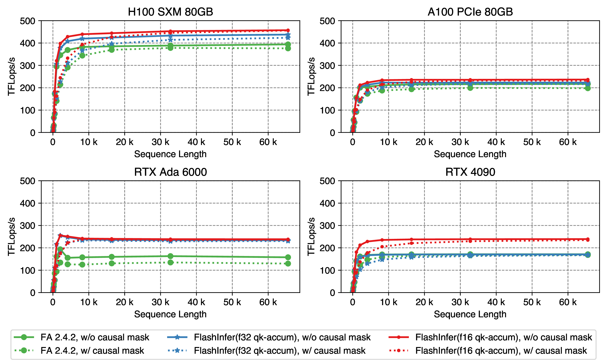
Figure 4: Single request prefill kernel performance, use Llama2-7B setting: num_kv_heads=num_qo_heads=32, head_dim=128. Sequence length varies from 32 to 65535.
In f32 accumulation setting, FlashInfer’s prefill kernel
implementation achieves best performance on all 4 GPUs. allow_fp16_qk_reduction
option can further improve performance, especially for RTX 4090.
Append & Decode Optimizations
Append and decode attention tend to have larger KV length than query length, which could limit the SM(StreamMultiprocessor) utilization in GPUs when batch size is small, FlashInfer propose to use the Split-K trick in GEMM optimizations which splits the KV-Cache on sequence dimension to increase parallelism. Another work, Flash-Decoding also explored this idea, you can check their great blog post for visualizations and explanations. Below is the decode attention performance comparison of FlashInfer 0.0.1 and FlashAttention 2.4.2 on different GPUs:
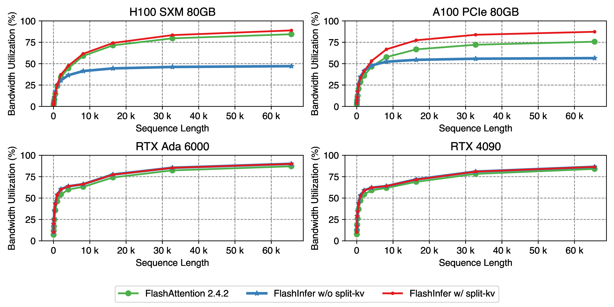
Figure 5: Single request decode kernel performance, use Llama2-7B setting: num_kv_heads=num_qo_heads=32, head_dim=128. Sequence length varies from 32 to 65536.
FlashInfer achieves best performance on all 4 GPUs, and the GPU
bandwidth utilization is close to 100% for long sequences. An
interesting fact is that split-KV do not improve performance for GPUs
such as RTX Ada 6000 and RTX 4090 because they have relatively smaller
memory bandwidth and stronger CUDA Cores performance (decode attention
has low operational intensity and we use CUDA Cores in non-GQA setting).
Unlike compute units which is SM local, the global memory traffic on
GPUs is shared, thus using 32 (number of heads in Llama2-7B setting) of
108 SMs can still fully utilize the memory bandwidth if the operator is
not compute-bound. A100 GPUs has low CUDA Cores performance (20
TFLops/s), using 32 of 108 SMs (5.9 TFLops/s) will make the kernel
compute-bound (besides multiply and add, there are also time-consuming
computations such as exp in attention
computation), and split-KV is helpful in this case.
For batch decoding attention, FlashInfer implements PageAttention with optimizations such as pre-fetching page indices, below is performance comparison of FlashInfer PageAttention kernel and vLLM PageAttention kernel:
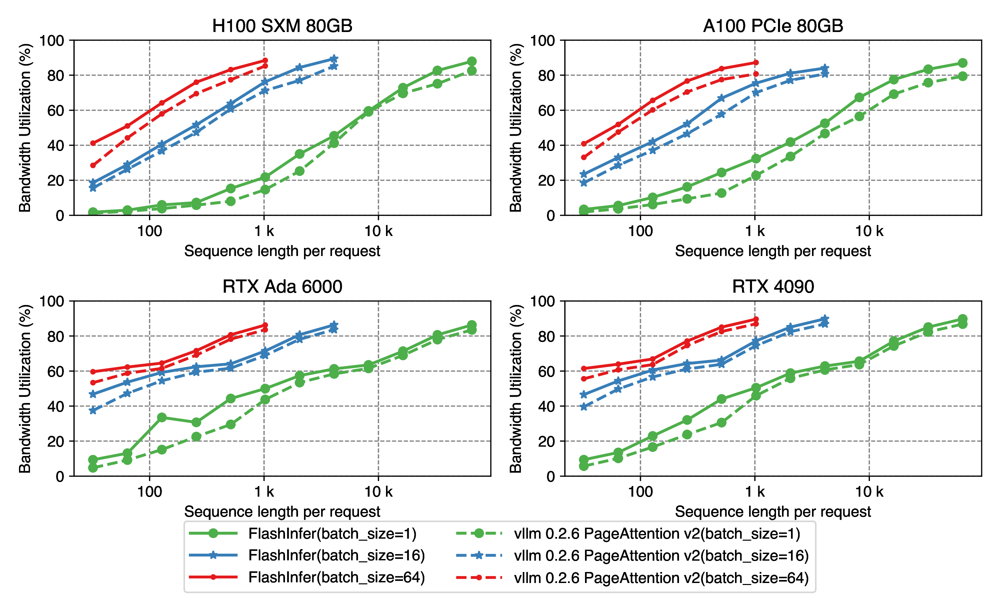
Figure 6: Batch decode kernel performance, use Llama2-7B setting: num_kv_heads=num_qo_heads=32, head_dim=128, batch_size=[1,16,64]. Sequence length varies from 32 to 65536 for batch_size = 1, from 32 to 4096 for batch_size = 16, and from 32 to 1024 for batch_size = 64.
FlashInfer PageAttention kernel has consistent speedup over vLLM 0.2.6’s implementation in different batch sizes and different sequence lengths.
We also benchmark the append attention kernels (append attention shares the same set of APIs with prefill attention, with the distinction that query length is smaller than key/value length in append attention):
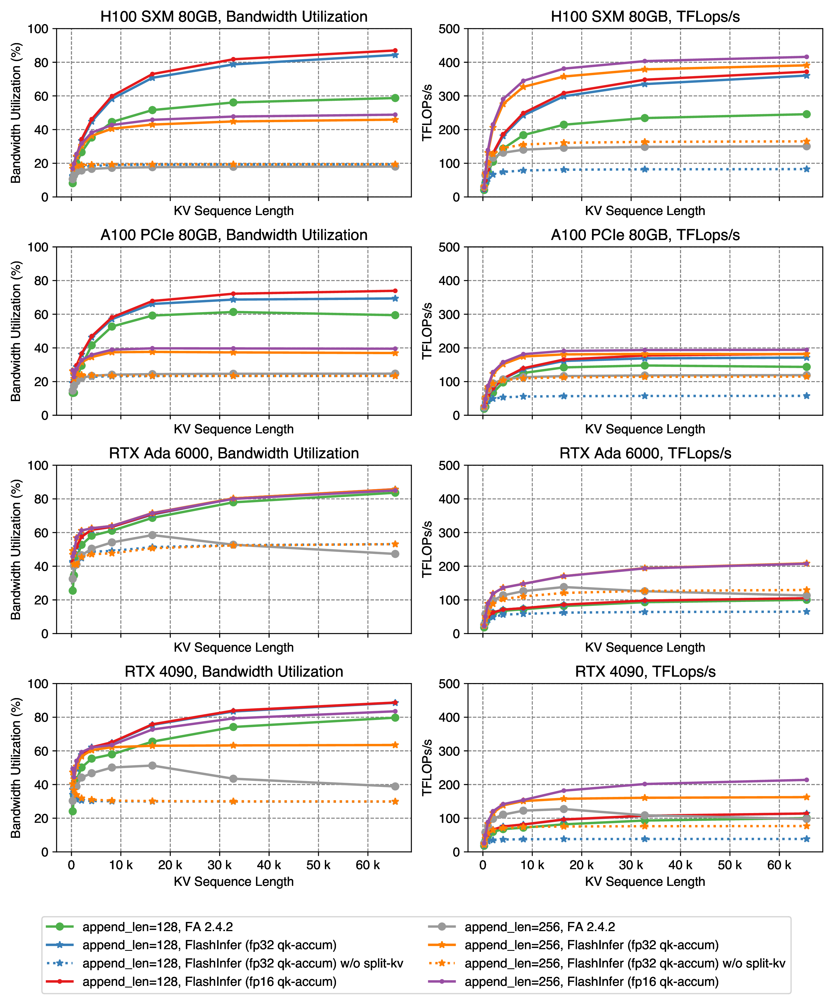
Figure 7: Append attention kernel performance, use Llama2-7B setting, num_kv_heads=num_qo_heads=32, head_dim=128. The append length is set to 128 or 256, KV sequence length varies from 32 to 65536.
FlashInfer still achieves the best performance on all 4 GPUs, either
with fp16 or fp32 qk accumulator. Split-KV significantly improves the
performance of append kernels for append length of both 128 and 256,
because the operational intensity of the operator becomes large, and
using 32/100+ SMs no longer provides enough compute units, thus making
the kernel compute-bound. Note that the ridge point of RTX 4090’s Tensor
Cores fp32 accumulator roofline is 163 (165 TFLops/s / 1008 GB/s), the
kernel will be compute bound when query length (which approximately
equals operational intensity) reaches 256, using allow_fp16_qk_reduction
can alleviate the issue.
FlashInfer also implemented batch append attention kernel where key/value is stored in Page Tables, this could accelerate speculative decoding in LLM serving, and we will discuss this in another blog post.
Grouped-Query Attention
Grouped-Query Attention uses smaller number of key/value heads than the number of query/output heads, makes the operational intensity higher than ordinary multi-head attention. FlashInfer proposes to use prefill(multi-query) attention kernel, which utilize Tensor Cores, for decode attention in GQA. Below is the GQA kernel performance comparison between FlashInfer (w/ CUDA Cores and w/ Tensor Cores), and FlashAttention 2.4.2 on A100 & H100:
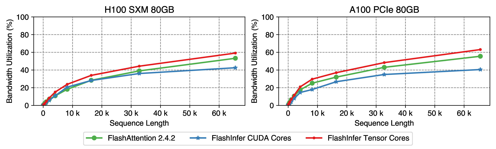
Figure 8: Single request GQA decode performance, use llama2-70b setting: tp=2, num_kv_heads=4, num_qo_heads=32, head_dim=128. Sequence length varies from 32 to 65536.
For single-request GQA decoding attention, FlashInfer (Tensor Cores) achieves better performance than FlashAttention 2.4.2 on both A100 & H100, and FlashInfer (CUDA Cores) can only achieve 40%+ bandwidth utilization because of limited CUDA Cores performance.
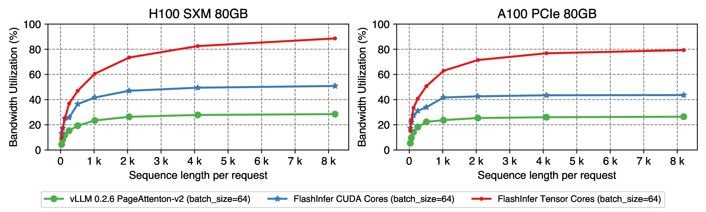
Figure 9: Batch GQA decode performance, use llama2-70b setting: tp=2, num_kv_heads=4, num_qo_heads=32, head_dim=128. batch_size is set to 64 and sequence length per request varies from 32 to 8192.
For batch GQA decoding attention, FlashInfer w/ Tensor Cores is 3x
faster than vLLM PagaAttention when batch_size=64.
Fused-RoPE Attention
KV-Cache compression techniques such as H2O and Streaming-LLM prunes KV-Cache by removing tokens, and the original relative positions of tokens in KV-Cache will be polluted, storing post-RoPE keys in KV-Cache become meaningless. FlashInfer implements high-performance Fused-RoPE attention kernels which applies RoPE on the fly, below is the performance comparison of FlashInfer decoding attention with and without RoPE:
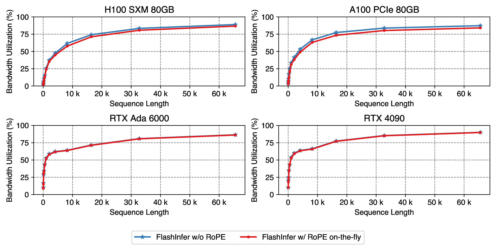
Figure 10: Fused RoPE attention performance, use Llama2-7B setting: um_kv_heads=num_qo_heads=32, head_dim=128. Sequence length varies from 32 to 65536.
RoPE has negligible overhead on all 4 GPUs, especially for RTX 6000
Ada and RTX 4090 GPU which has strong CUDA Cores performance (RoPE
requires sin/cos computation that
can not be accelerated with Tensor Cores).
Low-Precision Attention
More and more work show that KV-Cache can be quantized to low bits with negligible accuracy loss. FlashInfer implements high-performance fp8 decode decode kernels, which could accelerate the kernel by up to 2x compared with fp16 kernels:
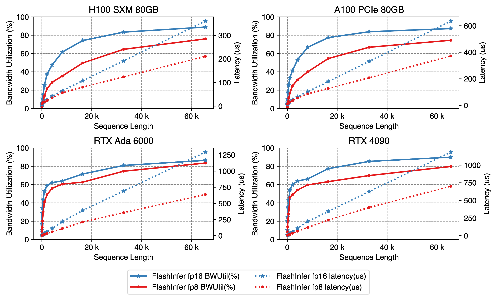
Figure 11: FP8 decode attention performance, use Llama2-7B setting: num_kv_heads=num_qo_heads=32, head_dim=128. Sequence length varies from 32 to 65536.
There is some gap between bandwidth utilization of fp8 and fp16 kernels, however the gap is getting closer as the query length grows.
Atom implemented high-performance decode attention kernels with int4 quantization on top of FlashInfer.
Effect of Page Size on FlashInfer’s PageAttention
The FlashInfer decode kernels prefetches page indices in GPU shared memory, thus minimizing the impact of the page size on kernel performance. Below is the performance comparison of FlashInfer PageAttention with different page sizes on A100:
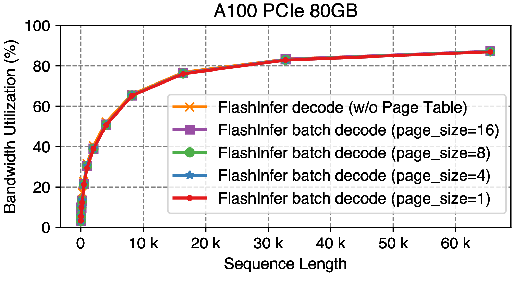
Figure 12: Batch decode performance on different page_size. batch_size is set to 1, use Llama2-7B setting: num_kv_heads=num_qo_heads=32, head_dim=128. Sequence lengths varies from 32 to 65536. We also add a reference line for the performance of FlashInfer single-request decode attention without using Page Table.
The memory bandwidth utilization of the 4 different page sizes are nearly identical, and they are close to the single-request decode attention curve, which indicates that page size has little effect on FlashInfer PageAttention’s kernel performance, and page table itself has little overhead.
Some recent work such sglang explores novel
KV-Cache management algorithm which requires page_size=1, and the
performance could benefit from FlashInfer’s optimization.
Remarks and Future Work
The idea of splitting KV-Cache on sequence dimension to increase parallelism was also explored in Flash-Decoding, FlashInfer implemented this idea concurrently, see our github checkpoint on Sept 1st, 2023 and our public talk at TVM Unity Open Development Meeting on Sept 5th, 2023.
Currently FlashInfer only supports NVIDIA GPUs, the AMD and Apple GPU version of FlashInfer have been initially supported in MLC-LLM project with the help of Apache TVM compiler. Our next release will include the 4-bit fused dequantize+attention operators proposed in Atom and LoRA operators used in Punica. In a longer term, we are interested in performance optimization on post-Hopper NVIDIA GPUs and AMD/Apple GPUs, and new operators from emerging LLM architectures. Please check our roadmap for development plans, and leave your suggestions on what features you want to see in FlashInfer.
Acknowledgement
FlashInfer is inspired by FlashAttention 2, vLLM, cutlass and Stream-K project.
This blog post is written by Zihao Ye. We thank the entire FlashInfer team for their contributions to the project:
- Zihao Ye (UW): design and implementation of FlashInfer
- Lequn Chen (UW): page table data structure design, API design, CI/CD and Punica integration
- Ruihang Lai (CMU): KV-Cache design, API design and integration with MLC-LLM
- Yilong Zhao (UW & SJTU): int4 attention operators
- Size Zheng (UW & PKU): CUDA optimizations and speculative decoding
- Junru Shao and Yaxing Cai (OctoAI): MLC-LLM integration
- Bohan Hou and Hongyi Jin (CMU): porting FlashInfer to AMD and Mac GPUs with Apache TVM
- Liangsheng Yin (SJTU & LMSys): PyTorch bindings and sglang integration.
- Yifei Zuo (UW & USTC): PyTorch bindings
- Tianqi Chen (CMU & OctoAI): recursive form of softmax/attention merge and advices
- Luis Ceze (UW & OctoAI): performance breakdown analysis and advices
We also thank Masahiro Masuda (OctoAI), Yixin Dong (UW & SJTU), Roy Lu (UW), Chien-Yu Lin (UW), Ying Sheng (Stanford & LMSys) and Lianmin Zheng (Berkeley & LMSys) for their valuable feedbacks and discussions.
Citation
@misc{flashinfer,
title = {Accelerating Self-Attentions for LLM Serving with FlashInfer},
url = {https://flashinfer.ai/2024/02/02/introduce-flashinfer.html},
author = {Ye, Zihao and Chen, Lequn and Lai, Ruihang and Zhao, Yilong and Zheng, Size and Shao, Junru and Hou, Bohan and Jin, Hongyi and Zuo, Yifei and Yin, Liangsheng and Chen, Tianqi and Ceze, Luis},
month = {February},
year = {2024}
}Footnotes
Dissecting Batching Effects in GPT Inference by Lequn Chen ↩︎